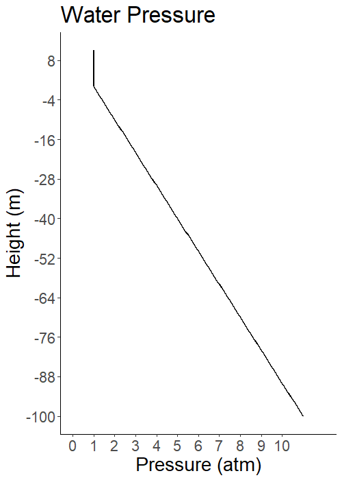
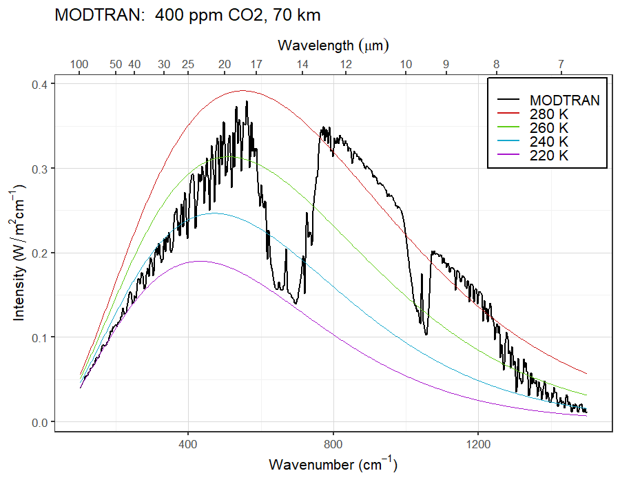
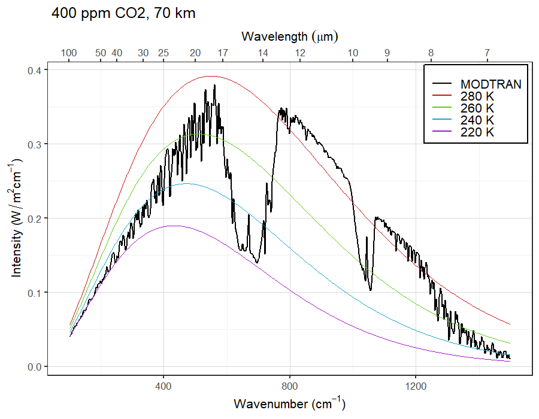

Review of the Greenhouse Effect
EES 3310/5310
Global Climate Change
Jonathan Gilligan
Class #7: Wednesday, January 22 2020
Air vs. Water


Air vs. Water
- Pressure = weight of everything overhead.
- Air is compressible, water isn’t.
- 1 meter height of water weighs 1000 kg/m2
- 1 meter height of dry air at sea-level density weighs 1.3 kg/m2
- 1 m height of dry air 10 km above sea level weighs 0.4 kg/m2

Air Pressure
-
Pressure at height \(h\): \[ \begin{aligned} P(h) & = P_0\: e^{-h/8.0 \text{km}} \\ &= P_0\: 2^{-h / 5.5 \text{km}} \\ &= P_0 \left(\frac{1}{2}\right)^{h / 5.5 \text{km}} \end{aligned} \]
- Half the air is below 5.5 km.
- 3/4 is below 11 km
- 7/8 is below 16.5 km
NOTE: The number 5.5 km is not exact,
but it’s consistent with the textbook.

Why is the air cooler higher up?

Overview of convection

- Closer to vertical = smaller lapse rate (vertical = zero)
- Closer to horizontal = larger lapse rate
Stable Atmosphere
Initial State

- green = adiabatic lapse
- blue = environmental lapse < adiabatic
Stable Atmosphere
Parcel is heated

Stable Atmosphere
Rises to new equilibrium

Stable Atmosphere
Parcel is cooled

Stable Atmosphere
Sinks to new equilibrium

Unstable Atmosphere
Initial State

- green = adiabatic lapse
- blue = environmental lapse > adiabatic
Unstable Atmosphere
Parcel is heated

Unstable Atmosphere
Rises without stopping

Sweating

I’m not out there sweating for three hours every day just to find out what it feels like to sweat. — Michael Jordan
What Does It Feel Like to Sweat?
Latent Heat
- When 1 gram of water evaporates, it absorbs 2,260 Joules of heat, cools its surroundings.
- When 1 gram of water condenses, it releases 2,260 Joules of heat, warms its surroundings.
- 2,260 Joules of heat will change the temperature of a kilogram of air by 2.2 K (4° F).
Moist Convection

- Dry air rises and cools
- Cooling \(\Rightarrow\) water vapor condenses to liquid
- Condensation releases latent heat
- Latent heat warms air
Moist Convection
- Latent heat warms air
- Reduces adiabatic cooling
- Moist adiabatic lapse < Dry adiabatic lapse
- Smaller lapse = less stable
- Humid air is less stable than dry air
Greenhouse effect

Greenhouse effect
- \(T_{\text{skin}} = 254~\mathrm{K}\)
- \(T_{\text{ground}} = T_{\text{skin}} + \text{lapse rate} \times h_{\text{skin}}\)
- Increase greenhouse gases
- Skin height rises by \(\Delta h_{\text{skin}}\)
- \(T_{\text{ground}}\) rises by \(\text{lapse rate} \times \Delta h_{\text{skin}}\)
Understanding MODTRAN Output
- Black line: brightness of longwave radiation seen by a satellite in space.
- Colored curves: brightness of longwave light emitted by perfect black bodies at different temperatures
- Molecules overhead absorb radiation from molecules below.
- To be seen from space, there can’t be too many absorbing molecules overhead.
- More absorption: emission must be coming from higher up:
- Higher up = colder = less intensity (dimmer)
- Less absorption: emission comes from lower down:
- Lower down = warmer = greater intensity (brighter)

0.1 ppm CO2

10 ppm CO2

100 ppm CO2

10,000 ppm CO2

Question

- Why do we see the spike in the middle
of the CO2 absorption feature?
Answer


Answer
